Bu bölümdeki adımlar sistemi kullanan herkes için geçerlidir. Antrenörler, onaycılar ve görevliler de rezervasyonlarını aynı şekilde yapar.
1
Giriş yapma
Tarayıcıda sistemin adresini açın. Ayrı bir kayıt gerekmez; üniversitenin diğer sistemlerinde kullandığınız hesapla giriş yaparsınız.
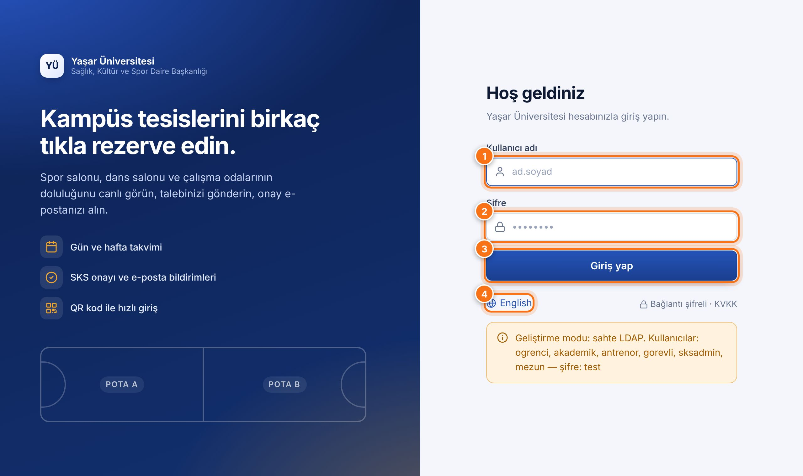
1Kullanıcı adı: Üniversite hesabınızın kullanıcı adı (e-posta adresinizin @ işaretinden önceki kısmı).
2Şifre: Üniversite hesabınızın şifresi. Şifreniz bu sistemde saklanmaz.
3Giriş yap düğmesine basın.
4Arayüzü İngilizce kullanmak için buraya tıklayın. Tercihiniz hatırlanır ve e-postalarınız da bu dilde gelir.
Bir dakika içinde 5 kez hatalı şifre girerseniz güvenlik nedeniyle kısa bir süre beklemeniz gerekir. Şifrenizi unuttuysanız Bilgi İşlem'e başvurun.
2
KVKK aydınlatma metnini onaylama
İlk girişinizde ve metin güncellendiğinde bu ekran açılır. Onaylamadan sistemi kullanamazsınız.
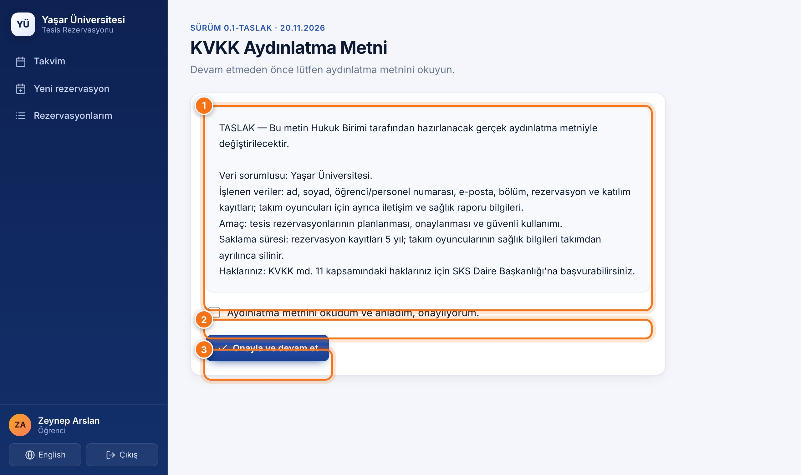
1Aydınlatma metnini okuyun. Hangi verilerinizin neden ve ne kadar süre işlendiğini anlatır.
2Onay kutusunu işaretleyin.
3Onayla ve devam et düğmesine basın.
3
Takvimi okuma ve boş saat bulma
Girişten sonra açılan ana ekran takvimdir. Gün görünümünde her sütun tesisin bir bölümünü gösterir. Örneğin spor salonunda Pota A ve Pota B ayrı sütunlardır.
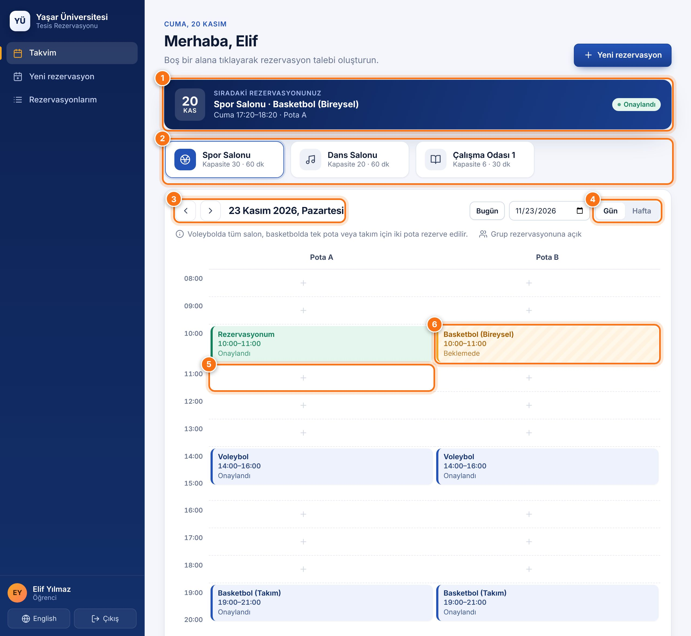
1Sıradaki rezervasyonunuz. En yakın rezervasyonunuzu ve durumunu gösterir. Tıklayınca Rezervasyonlarım sayfası açılır.
2Tesis seçimi. Hangi tesisin takvimini görmek istediğinizi seçin. Kartta kapasite ve slot süresi yazar.
3Gün değiştirme. Oklarla önceki ve sonraki güne geçin. Sağdaki tarih kutusundan belirli bir güne de atlayabilirsiniz.
4Gün / Hafta görünümü arasında geçiş yapın.
5Boş saat. Silik + işareti olan hücreler boştur. Tıkladığınızda rezervasyon formu o saat ve o bölüm seçili olarak açılır.
6Dolu saat. Kart, birden fazla saate yayılan rezervasyonları tek parça gösterir. Başkalarının adı görünmez, yalnızca aktivite ve durum görünür.
Boş, rezerve edilebilir
Sizin rezervasyonunuz
Beklemede (onay bekliyor)
Onaylı
Takım antrenmanı / sabit blok
Kapalı, tatil veya geçmiş
Beklemedeki bir talep de o saati kapatır. İlk talep eden hakkı alır; ikinci kişi aynı saati seçemez.
4
Hafta görünümü
Bütün haftayı tek ekranda görmek için Hafta düğmesine basın. Her hücre o saatte kaç bölümün boş olduğunu gösterir.
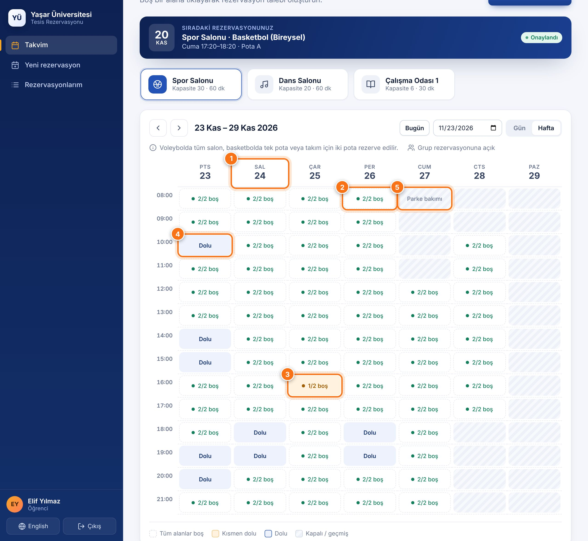
1Gün başlığı. Tıklayınca o günün ayrıntılı gün görünümü açılır.
22/2 boş: İki potanın ikisi de boş. Tam salon (ör. voleybol) için uygundur.
31/2 boş: Bir pota dolu. Yalnızca tek pota gerektiren aktiviteler yapılabilir.
4Dolu: Bu saatte boş bölüm yok.
5Taralı hücre: Tesis kapalı (çalışma saati dışı, tatil veya bakım).
5
Rezervasyon talebi oluşturma
Takvimde boş bir hücreye tıklayın ya da menüden Yeni rezervasyon'u seçin. Form açıldığında tesis, tarih ve saat seçili gelir.
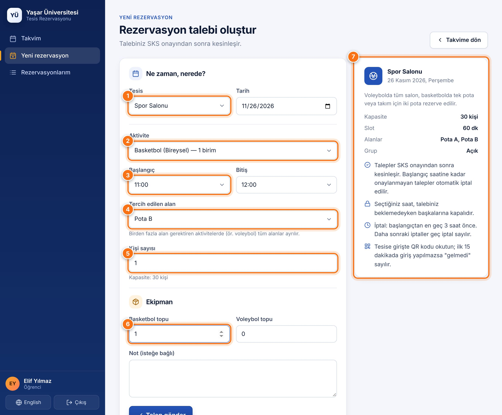
1Tesis ve tarih. Değiştirirseniz form o güne göre yenilenir.
2Aktivite. Yalnızca rolünüze açık aktiviteler listelenir. Yanında kaç bölüm kullanacağı yazar (ör. "1 birim" = tek pota).
3Başlangıç ve bitiş. Saatler tesisin slot süresine göre (30 veya 60 dakika) listelenir. Bir rezervasyon en fazla 2 saat sürebilir.
4Tercih edilen alan. İsterseniz belirli bir potayı seçin. "Fark etmez" derseniz sistem boş olanı verir.
5Kişi sayısı. Grup rezervasyonuna açık tesislerde kaç kişi geleceğinizi yazın. Kapasite altında gösterilir.
6Ekipman. Top, mat gibi ödünç almak istediğiniz malzemenin adedini girin. Stok o saat için kontrol edilir.
7Özet ve kurallar. Tesisin kapasitesi, bölümleri, iptal süresi ve QR ile giriş kuralı burada yazar.
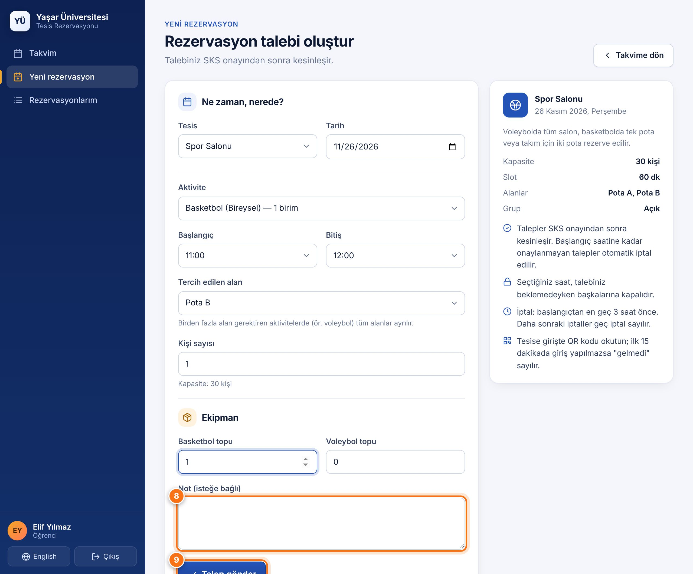
8Not. SKS'ye iletmek istediğiniz kısa bir açıklama (isteğe bağlı).
9Talep gönder. Talebiniz SKS onayına düşer ve onaycılara e-posta gider.
6
Rezervasyonlarım: durum takibi ve iptal
Talep gönderildikten sonra bu sayfa açılır. Durum değiştiğinde (onay, red, iptal) ayrıca e-posta alırsınız.
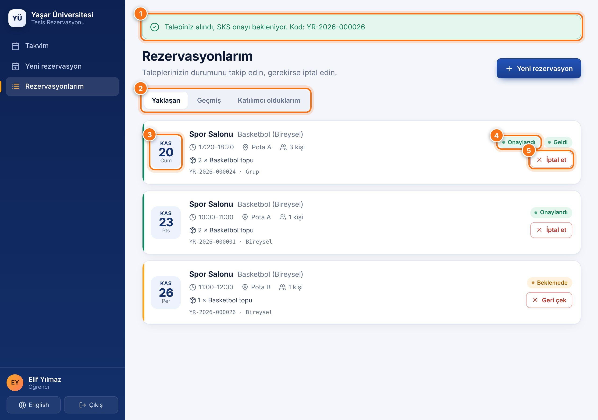
1Talep kodu. SKS ile yazışırken bu kodu kullanın (ör. YR-2026-000012).
2Sekmeler: Yaklaşan, Geçmiş ve sizi katılımcı olarak ekleyenlerin rezervasyonları.
3Tarih kutusu ve altında saat, alan, kişi sayısı, ekipman bilgileri.
4Durum:Beklemede (onay bekliyor), Onaylandı, Reddedildi (gerekçe yazar), İptal veya Süresi doldu (başlangıç saatine kadar onaylanmadı).
5Geri çek / İptal et. Beklemedeki talebi her zaman geri çekebilirsiniz. Onaylı rezervasyonu iptal süresinden sonra iptal ederseniz geç iptal sayılır.
30 gün içinde toplam 3 kez gelmezseniz ya da geç iptal ederseniz 14 gün boyunca rezervasyon yapamazsınız. Yasak süresi bu sayfanın üstünde kırmızı bir uyarıyla gösterilir.
7
Uyarı mesajları
Talebiniz bir kurala takılırsa form gönderilmez ve sayfanın üstünde nedeni yazar. Örneğin aynı gün aynı tesis için ikinci bir rezervasyon yapmaya çalıştığınızda:
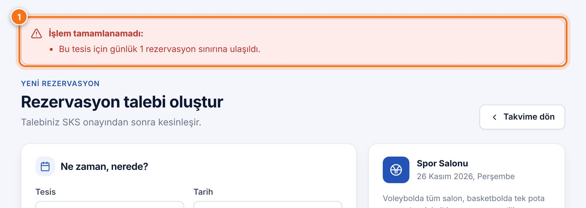
1Mesaj hangi kuralın engellediğini söyler. Takvimden başka bir gün, saat veya tesis seçerek tekrar deneyin.
8
Grup rezervasyonu ve katılımcılar
Dans salonu gibi bazı tesislerde katılımcıların listesi zorunludur. Bu tesislerde formda kişi sayısı yerine bir katılımcı alanı çıkar.
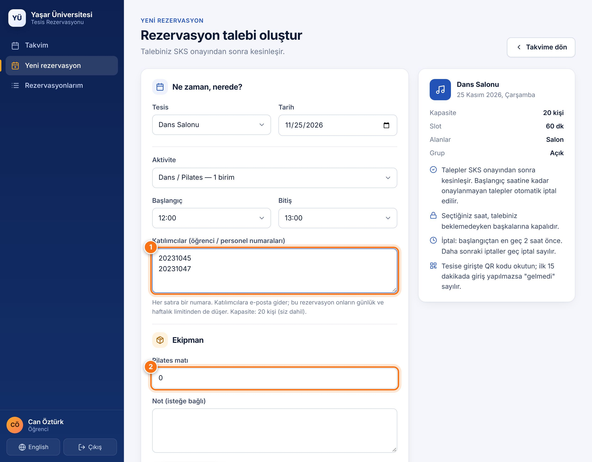
1Katılımcılar. Her satıra bir öğrenci veya personel numarası yazın. Katılımcılara e-posta gider ve bu rezervasyon onların günlük ve haftalık sınırından da düşer.
2Ekipmanı burada da isteyebilirsiniz (ör. pilates matı).
Biri sizi katılımcı olarak eklediyse rezervasyon Katılımcı olduklarım sekmesinde görünür:
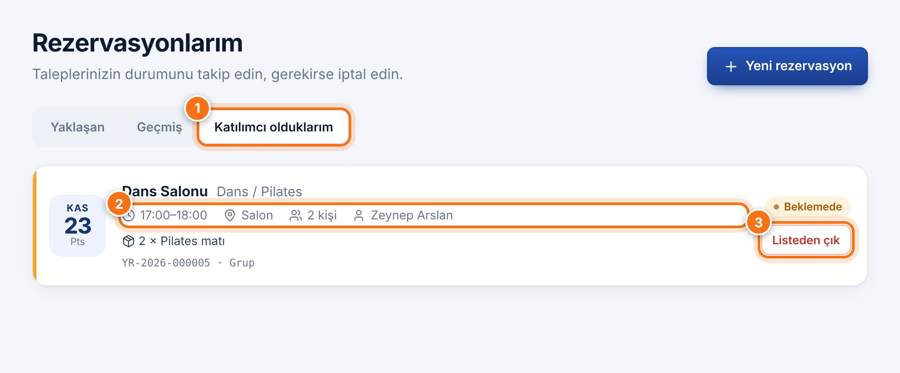
1Katılımcı olduklarım sekmesi.
2Rezervasyonu yapan kişi ve ayrıntılar.
3Katılmayacaksanız Listeden çık'a basın. Böylece sınırınız da boşalır.
9
Tesise girişte QR kodu okutma
Her tesisin girişinde bir QR kod asılıdır. Rezervasyonunuz başladığında telefonunuzun kamerasıyla bu kodu okutun. Giriş, başlangıçtan 10 dakika önce ile 15 dakika sonrası arasında yapılabilir.
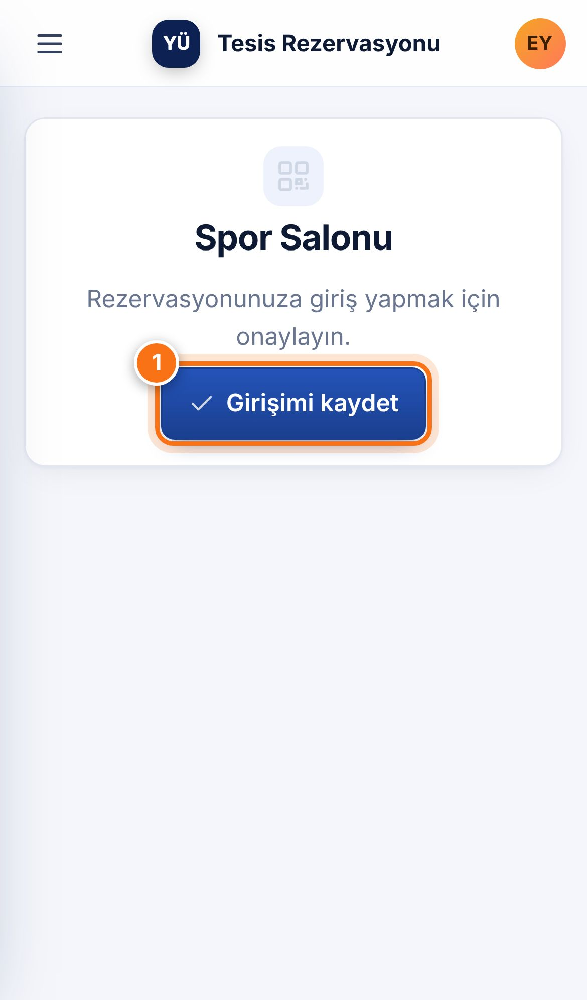
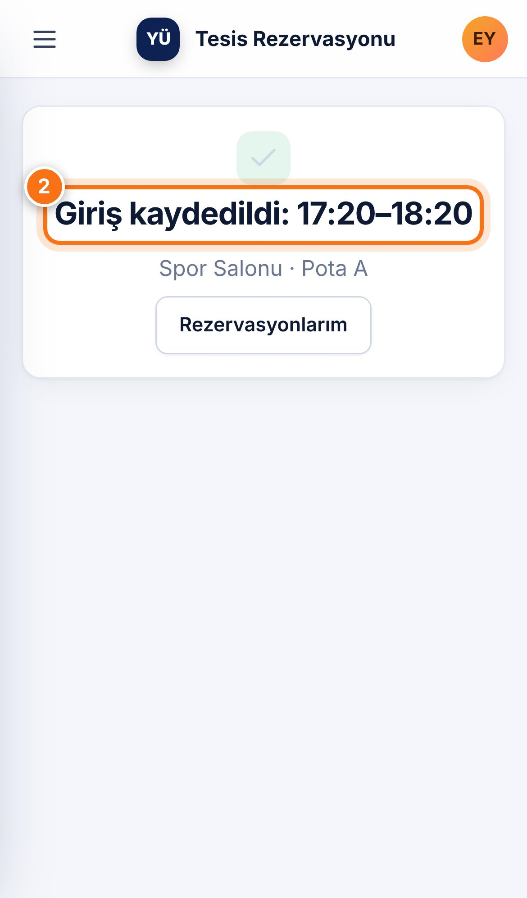
1QR kod okutulunca bu sayfa açılır (oturumunuz kapalıysa önce giriş yapın). Girişimi kaydet'e basın.
2Giriş kaydedildi mesajını gördüyseniz işlem tamamdır.
İlk 15 dakika içinde giriş yapılmayan rezervasyon otomatik olarak "gelmedi" sayılır. Telefonunuz yoksa salon görevlisine adınızı söyleyin; görevli girişinizi elle işaretleyebilir.
i
Kurallar özeti
Varsayılan değerler aşağıdadır. SKS, tesis ve rol bazında farklı değerler belirleyebilir; formun sağındaki özet her zaman geçerli değeri gösterir.
Kural
Varsayılan
Açıklama
En uzun süre
2 saat
Tek bir rezervasyonun süresi.
Günlük sınır
Tesis başına 1
Aynı gün farklı tesisler rezerve edilebilir (ör. sabah basketbol, akşam dans salonu).
Haftalık sınır
Tesis başına 3
Pazartesi–Pazar arası. Katılımcı olarak yer aldığınız rezervasyonlar da sayılır.
En ileri tarih
14 gün
Bugünden en fazla 14 gün sonrası.
En geç talep
2 saat önce
Başlangıca 2 saatten az kala talep oluşturulamaz.
Onay
Zorunlu
Başlangıç saatine kadar onaylanmayan talep otomatik iptal edilir.
Gelmeme
15 dakika
QR veya görevli girişi yoksa "gelmedi" sayılır.
Yaptırım
3 ihlal → 14 gün
30 gün içinde gelmeme veya geç iptal.
Tam salon
Antrenör ve personel
Voleybol ve takım basketbolu iki potayı birden kapatır. Öğrenciler tek pota rezerve eder.
Antrenör
Antrenörler
Antrenörler günlük, haftalık ve süre sınırlarından ve gelmeme yaptırımından muaftır. Rezervasyonları yine SKS onayından geçer. Her hafta tekrarlanan antrenmanlar için SKS'den sabit blok isteyin (bkz. 23).
10
Takım rezervasyonu (iki pota)
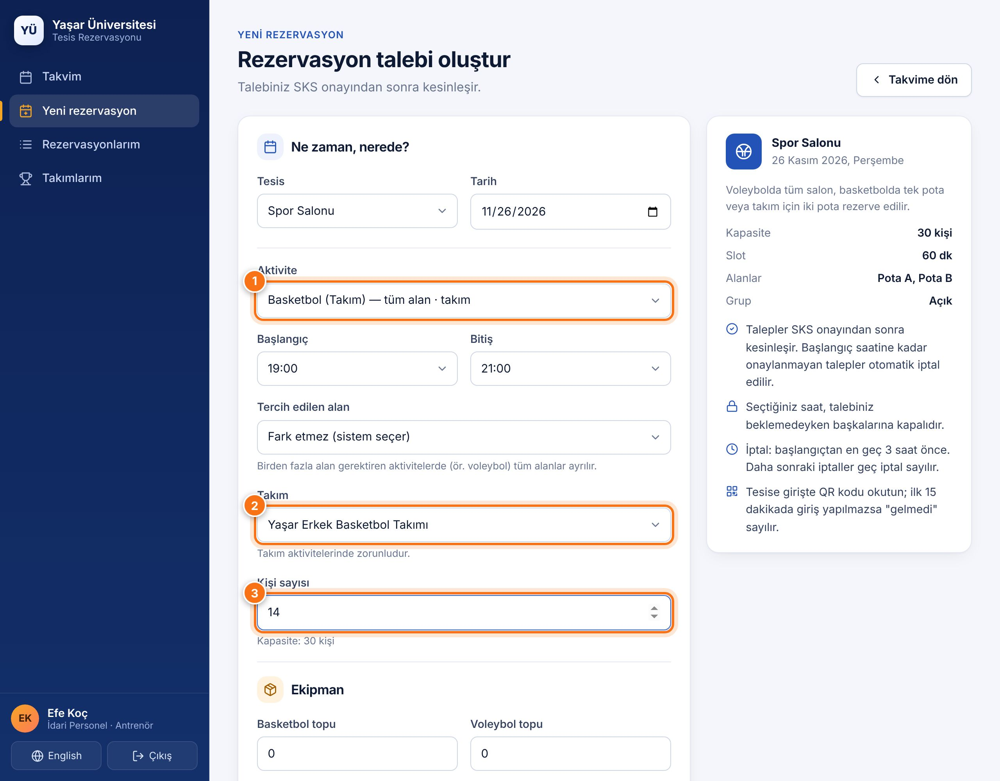
1Aktivite olarak Basketbol (Takım) seçin. Bu aktivite iki potayı birden ayırır.
2Takım seçimi zorunludur. Listede yalnızca antrenörü olduğunuz takımlar görünür.
3Gelecek oyuncu sayısını yazın.
11
Takımlarım ve sağlık raporu takibi
Menüden Takımlarım'ı açın ve bir takım seçin.
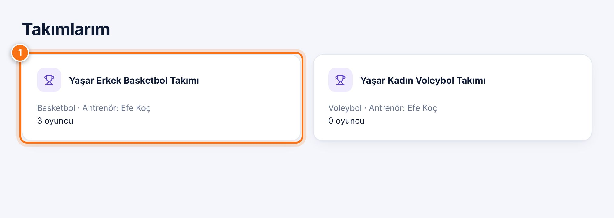
1Takım kartı: branş, antrenör ve aktif oyuncu sayısı. Tıklayınca oyuncu listesi açılır.
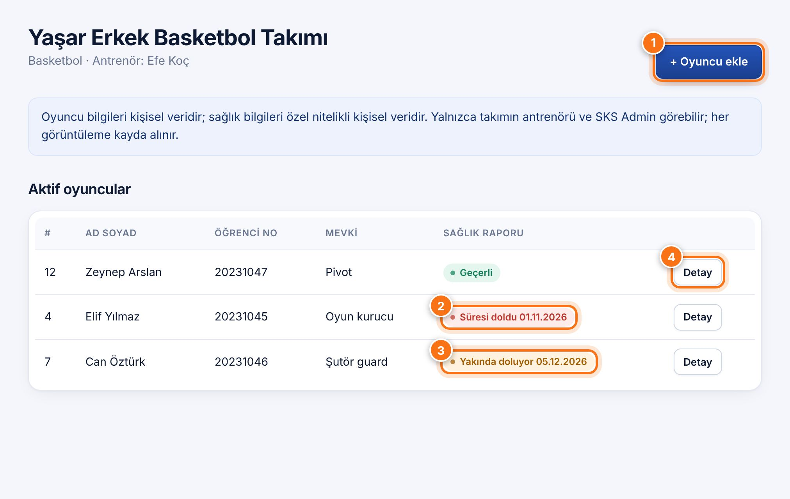
1Oyuncu ekle.
2Kırmızı: Sağlık raporunun süresi dolmuş.
3Sarı: 30 gün içinde dolacak. Bu durumda size e-posta da gelir.
4Detay: Oyuncunun kişisel ve sağlık bilgilerini görüntüleyin veya düzenleyin.
Oyuncu bilgileri kişisel veridir, sağlık bilgileri özel nitelikli kişisel veridir. Bu bilgileri yalnızca takımın antrenörü ve SKS Admin görebilir ve her görüntüleme kayda geçer.
12
Oyuncu ekleme
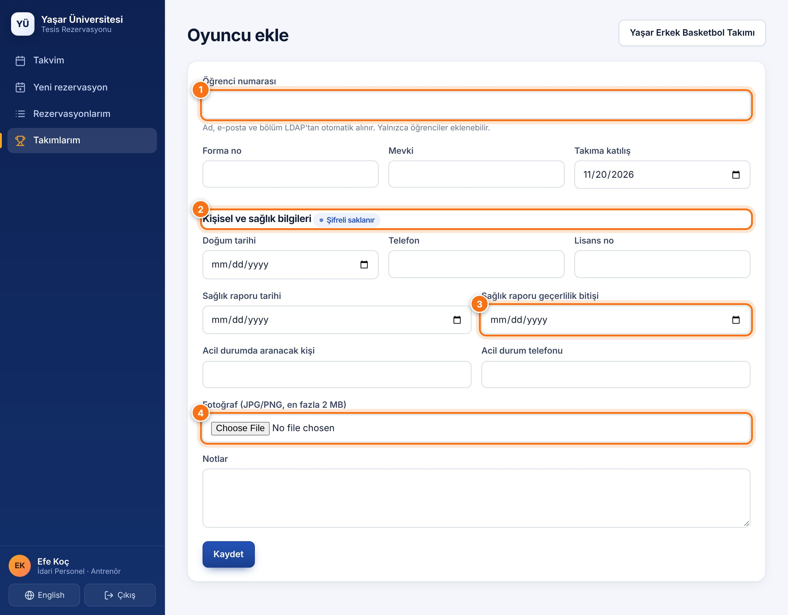
1Öğrenci numarası. Ad, e-posta ve bölüm üniversite sisteminden otomatik gelir. Yalnızca öğrenciler eklenebilir.
2Bu bölümdeki bilgiler veritabanında şifreli saklanır.
3Sağlık raporu geçerlilik bitişi. Bu tarihe 30 gün kala size hatırlatma gelir.
4Fotoğraf (JPG veya PNG, en fazla 2 MB).
Oyuncu detayındaki Takımdan çıkar düğmesi oyuncuyu "eski oyuncu" listesine taşır; sağlık ve iletişim bilgileri kalıcı olarak silinir.
SKS Onaycısı
Talepleri onaylama
Tesis onaycıları yalnızca kendilerine atanmış tesislerin taleplerini görür; SKS Admin bütün tesisleri görür. Yeni talep geldiğinde e-posta alırsınız. Bekleyen talep sayısı menüde turuncu rozetle gösterilir.
13
Talepleri onaylama
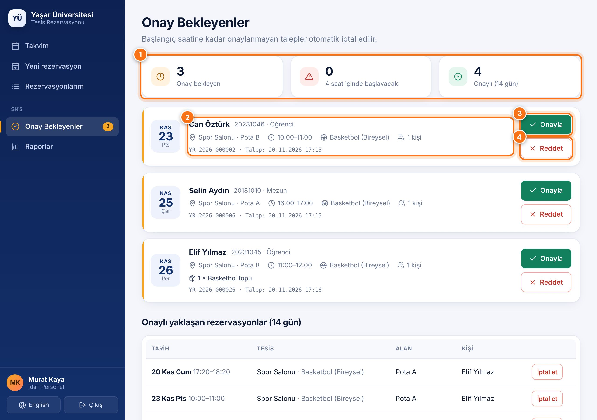
1Özet: Bekleyen talepler, 4 saat içinde başlayacak olanlar ve önümüzdeki 14 günün onaylı rezervasyonları.
2Talep ayrıntısı: Kişi, numarası ve rolü; tesis, alan, saat, aktivite, kişi sayısı, katılımcılar, ekipman ve not.
3Onayla. Kullanıcıya onay e-postası gider.
4Reddet. Bir sonraki adımda gerekçe istenir.
Otomatik onay yoktur. Talep 4 saat içinde onaylanmazsa size hatırlatma e-postası gelir; başlangıç saatine kadar onaylanmazsa talep otomatik iptal edilir ve slot boşa gider. Başlangıcı yakın talepler listenin üstünde ve turuncu çerçeveyle gösterilir.
14
Reddetme ve onaylı rezervasyonu iptal etme
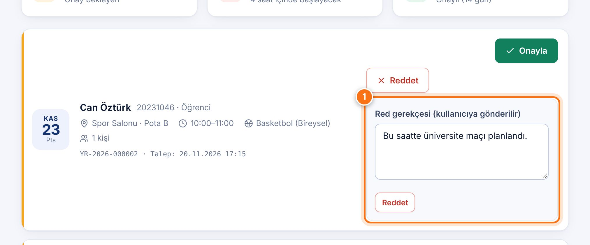
1Gerekçeyi yazın ve Reddet'e basın. Gerekçe kullanıcıya e-postayla iletilir.
Onaylı bir rezervasyonu iptal etmeniz gerekirse aynı sayfadaki Onaylı yaklaşan rezervasyonlar tablosunda İptal et'e basıp gerekçe yazın. SKS'nin yaptığı iptal kullanıcıya geç iptal olarak yazılmaz.
15
Raporlar
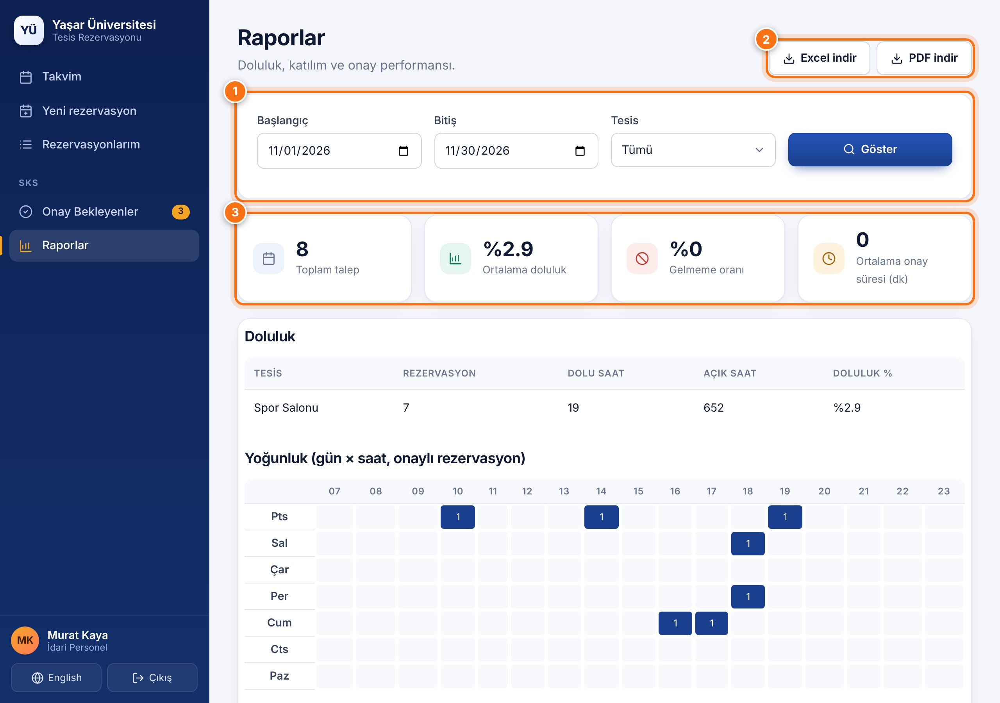
1Tarih aralığı ve tesis seçip Göster'e basın.
2Raporu Excel veya PDF olarak indirin.
3Toplam talep, ortalama doluluk, gelmeme oranı ve ortalama onay süresi.
Sayfanın devamında tesis bazında doluluk, gün × saat yoğunluk haritası, rol bazında kullanım, en çok kullananlar, yaptırımlar, onaycı bazında işlem sayıları, takım kullanımı ve hasarlı/kayıp ekipman tabloları yer alır.
Salon Görevlisi
Günlük işlemler
16
Günlük liste: katılım ve ekipman
Menüden Günlük Liste'yi açın. O gün için onaylı bütün rezervasyonlar saat sırasıyla listelenir.
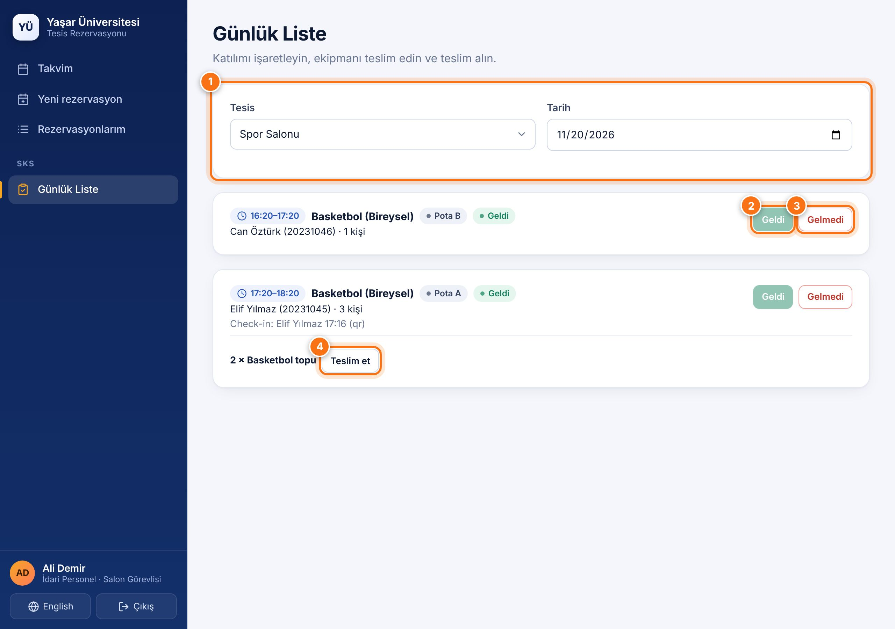
1Tesis ve tarihi seçin.
2Geldi: Kişi QR okutamadıysa girişini buradan işaretleyin. QR ile giriş yapanlar otomatik "Geldi" görünür.
3Gelmedi: Gelmeyenleri işaretleyin. Sistemin yanlışlıkla "gelmedi" saydığı birini "Geldi" yaparsanız ilgili yaptırım da kaldırılır.
4Teslim et: Ekipmanı verdiğinizde basın. Geri alırken durumunu (sağlam, hasarlı, kayıp) seçip Teslim al'a basın.
SKS Admin
Yönetim
Yönetim sayfaları menünün Yönetim bölümündedir. Burada yapılan her değişiklik işlem kaydına yazılır.
17
Tesisler
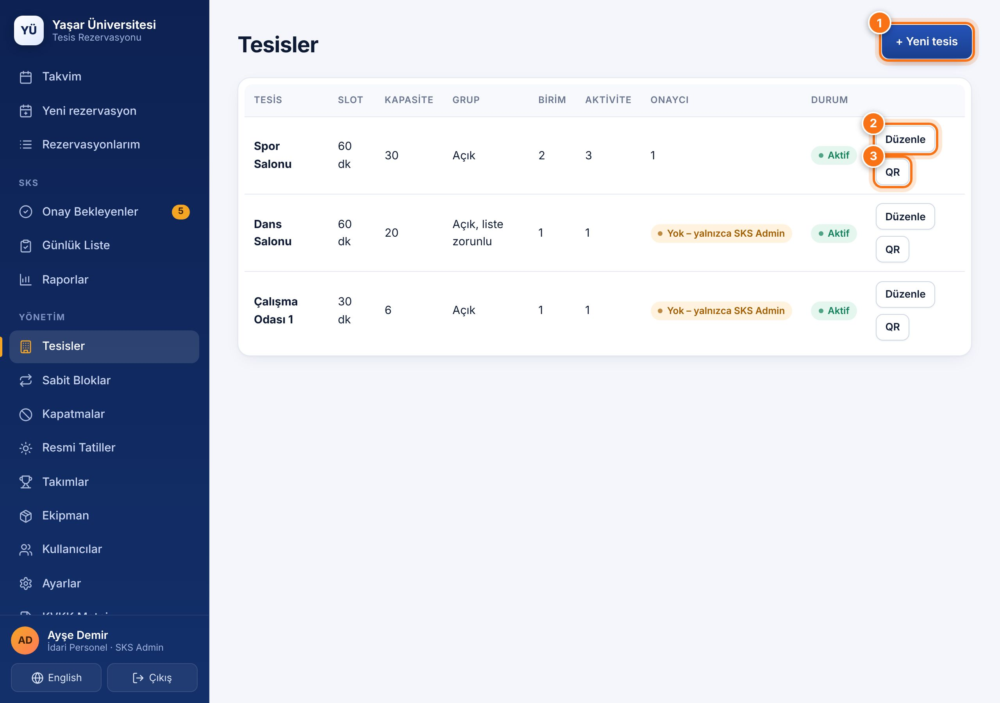
1Yeni tesis oluşturun. Tesis tek bölümlü, varsayılan saatlerle açılır; sonra düzenlersiniz.
2Düzenle: Ayarlar, bölümler, aktiviteler, saatler, kurallar ve onaycılar.
3QR: Girişe asılacak QR kodu.
18
Tesis genel ayarları
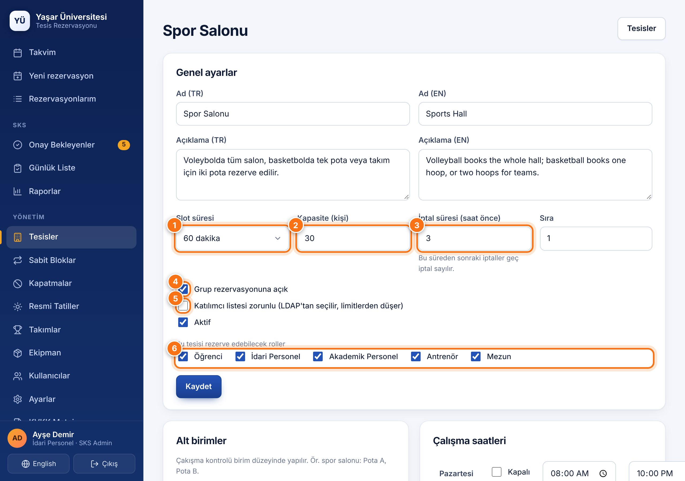
1Slot süresi: 30 veya 60 dakika. Takvimdeki satırlar buna göre oluşur.
2Kapasite: En fazla kişi sayısı.
3İptal süresi: Başlangıçtan kaç saat önceye kadar iptal geç sayılmaz.
4Grup rezervasyonuna açık: Kapalıysa yalnızca tek kişilik rezervasyon yapılır.
5Katılımcı listesi zorunlu: Açıksa katılımcılar numarayla eklenir ve onların sınırından da düşer.
6Roller: Bu tesisi kimler rezerve edebilir (ör. çalışma odasını mezunlara kapatmak).
19
Alt birimler ve çalışma saatleri
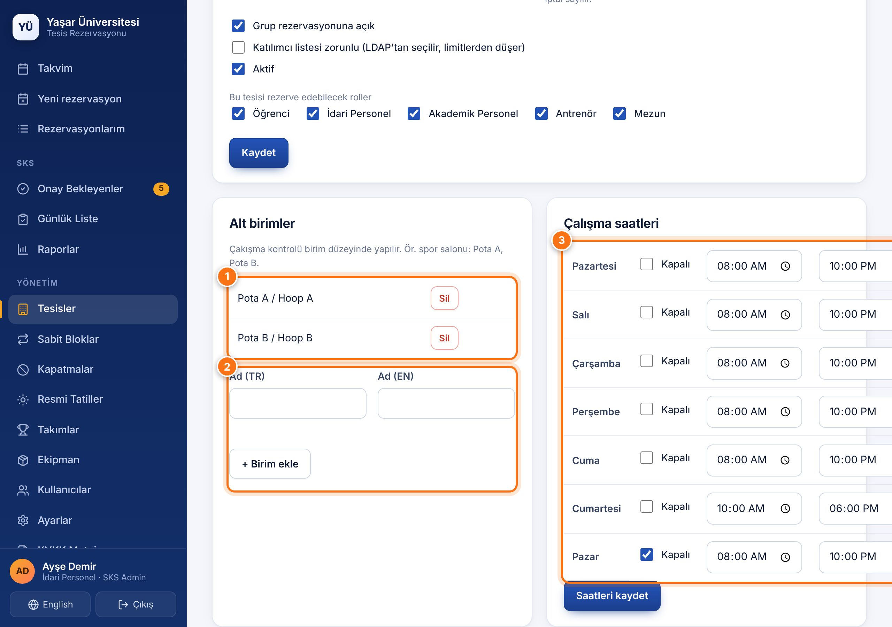
1Alt birimler: Ayrı ayrı rezerve edilebilen bölümler (Pota A, Pota B). Çakışma kontrolü bölüm düzeyinde yapılır.
2Yeni bölüm eklemek için Türkçe ve İngilizce adını yazın.
3Çalışma saatleri: Her gün için açılış–kapanış ya da "Kapalı".
20
Aktiviteler: voleybol ve basketbol kuralı
Spor salonundaki "voleybolda tüm salon, basketbolda tek pota, takımda iki pota" kuralı aktivitelerle kurulur.
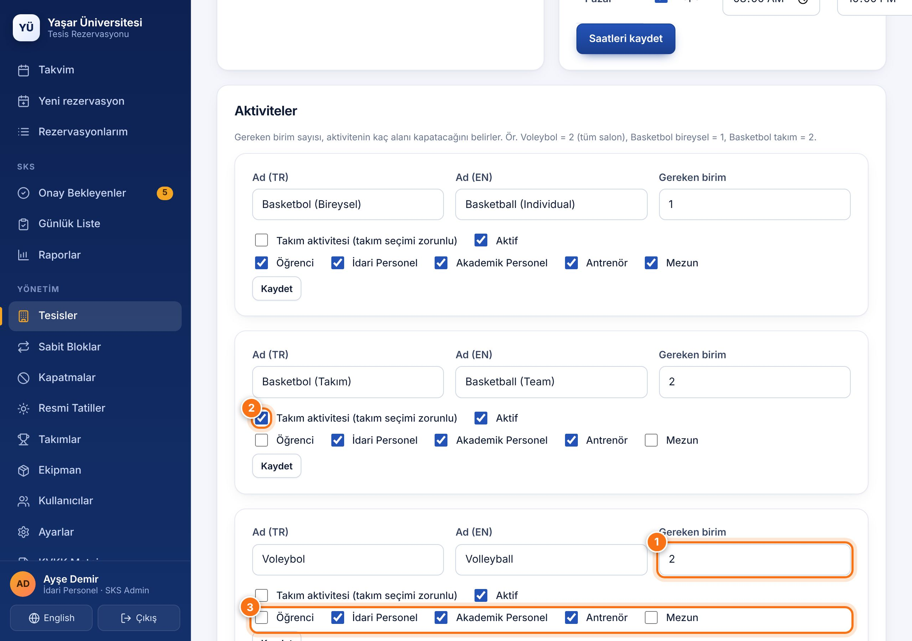
1Gereken birim: Aktivitenin kaç bölümü kapatacağı. Voleybol = 2 (tüm salon), Basketbol bireysel = 1, Basketbol takım = 2.
2Takım aktivitesi: İşaretliyse rezervasyonda takım seçmek zorunludur.
3Roller: Bu aktiviteyi kimlerin seçebileceği. Örnekte voleybolda "Öğrenci" işaretsiz, yani tam salonu yalnızca personel ve antrenörler alabilir.
21
Kurallar ve onaycılar
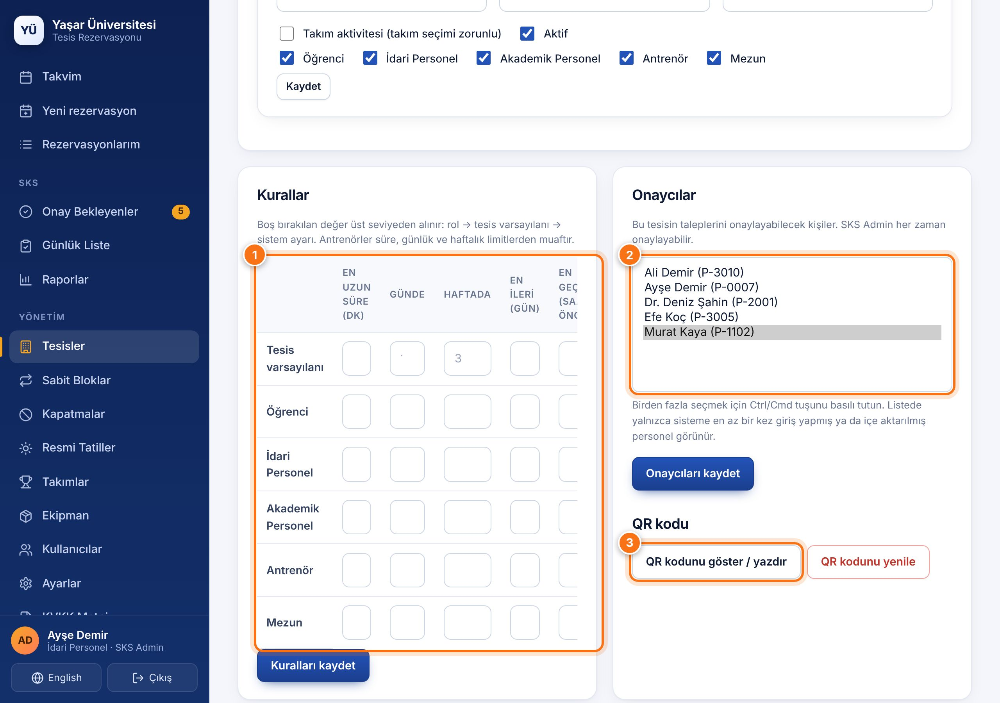
1Kurallar: Tesis varsayılanı ve rol bazında süre, günlük, haftalık, en ileri tarih ve en geç talep değerleri. Boş bırakılan değer bir üst seviyeden (tesis varsayılanı, sonra sistem ayarı) alınır.
2Onaycılar: Bu tesisin taleplerini onaylayacak kişiler. Birden fazla seçmek için Ctrl (Mac'te Cmd) tuşunu basılı tutun.
3QR kodunu görüntüleyin ya da yenileyin.
22
QR kodunu yazdırma
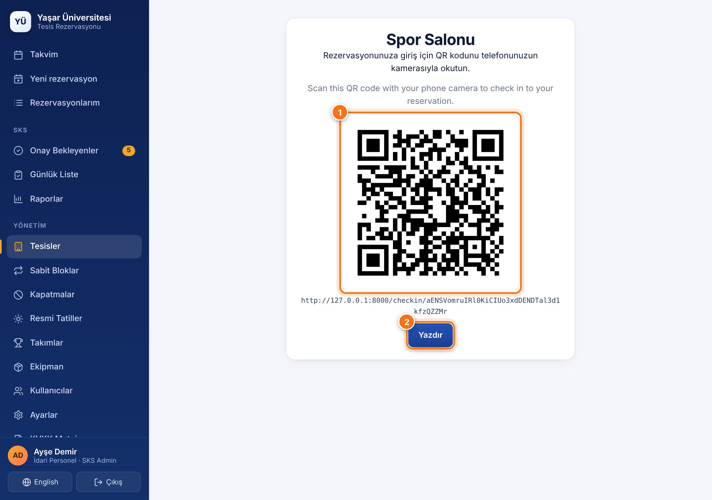
1Tesise özel QR kod. Türkçe ve İngilizce açıklamasıyla birlikte yazdırılır.
2Yazdır ve tesis girişine asın.
QR kodunun fotoğrafının dışarıda paylaşıldığından şüphelenirseniz tesis düzenleme sayfasında QR kodunu yenile'ye basın. Eski kod hemen geçersiz olur; yenisini yazdırıp asın.
23
Sabit bloklar (tekrarlanan antrenmanlar)
Takım antrenmanları ve dersler gibi her hafta tekrarlanan kullanımları bir kerede girin. Bloklar onay gerektirmez ve takvimde mor görünür.
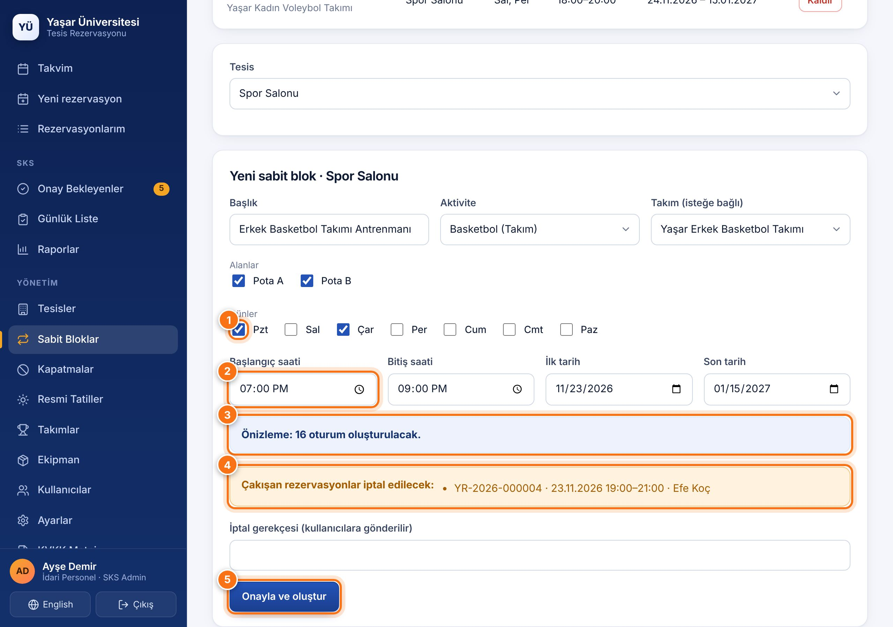
1Başlık, aktivite, takım ve alanları seçtikten sonra günleri işaretleyin.
2Saat ve tarih aralığı (ör. dönem boyunca). Ardından Önizle'ye basın.
3Önizleme: Kaç oturum oluşacağı ve tatil/kapatma nedeniyle atlanan günler.
4Çakışan rezervasyonlar: Kaydederseniz bunlar iptal edilir ve sahiplerine yazdığınız gerekçeyle e-posta gider.
5Onayla ve oluştur.
24
Kapatmalar (bakım, turnuva, etkinlik)
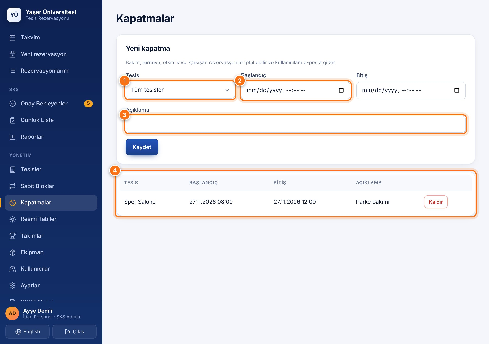
1Tesis seçin. "Tüm tesisler" seçeneği de vardır.
2Başlangıç ve bitiş tarih-saati.
3Açıklama. Takvimde taralı hücrede ve iptal e-postalarında görünür.
4Mevcut kapatmalar. Çakışan rezervasyon varsa kaydetmeden önce listelenir ve onayınız istenir.
25
Resmi tatiller
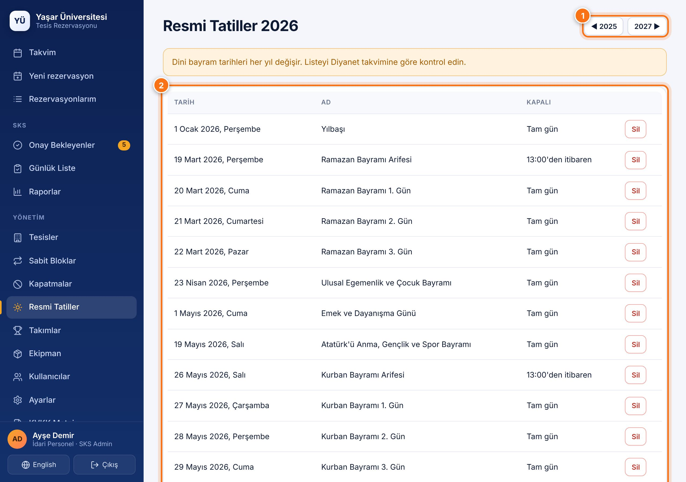
1Yıllar arasında geçiş yapın.
2Tatil listesi. Arife gibi yarım günler "13:00'ten itibaren" kapalıdır. Listenin altındaki formdan yeni tatil ekleyebilirsiniz.
Dini bayram tarihleri her yıl değişir. Yılbaşından önce listeyi resmi takvimle karşılaştırın.
26
Kullanıcılar ve roller
Öğrenci, idari personel, akademik personel ve mezun rolleri üniversite hesabından otomatik gelir. Antrenör, salon görevlisi ve SKS Admin rollerini bu sayfadan siz verirsiniz.
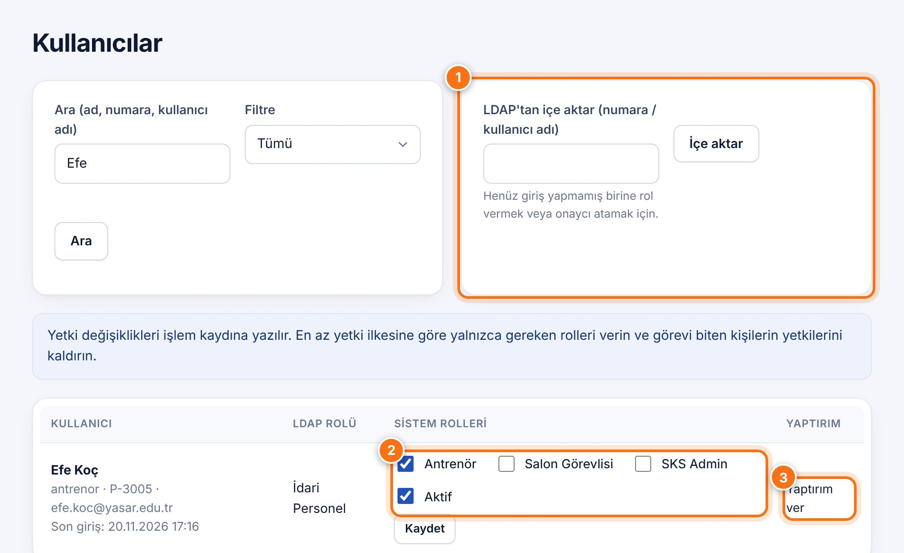
1İçe aktar: Henüz hiç giriş yapmamış birine rol vermek ya da onu onaycı yapmak için numarasıyla ekleyin.
2Sistem rolleri: Antrenör, Salon Görevlisi, SKS Admin ve Aktif. Aktif işaretini kaldırırsanız kişinin açık oturumu da kapanır.
3Yaptırım ver: Elle rezervasyon yasağı uygulayın. Aktif yasaklar burada Kaldır düğmesiyle görünür.
Görev değişikliğinde (ör. antrenörün ayrılması) rolleri hemen kaldırın. Yetkileri yalnızca gerektiği kadar verin.
27
Ayarlar ve KVKK metni
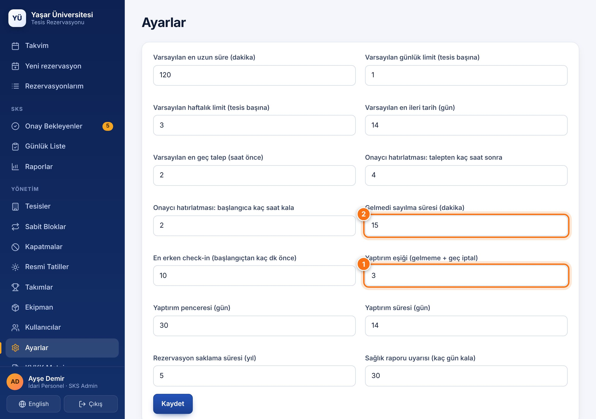
1Yaptırım eşiği ve yanındaki ayarlar: kaç ihlalde, kaç günlük pencerede, kaç günlük yasak.
2Gelmedi sayılma süresi ve diğer süreler. Varsayılan kurallar, hatırlatma saatleri ve saklama süresi de buradadır.
KVKK Metni sayfasından Hukuk Biriminin hazırladığı metnin yeni sürümünü yayımlarsınız. Yayımlandığında bütün kullanıcılardan bir sonraki girişlerinde yeniden onay istenir. Sayfada her sürümü kaç kişinin onayladığı da görünür.
28
İşlem kaydı
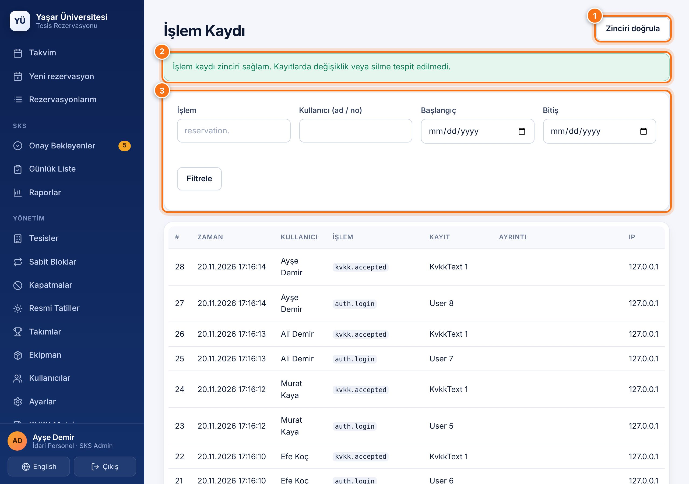
1Zinciri doğrula: Kayıtların değiştirilip değiştirilmediğini kontrol eder. Sistem bunu her gece kendisi de yapar.
2Yeşil mesaj, kayıtlarda değişiklik veya silme olmadığını gösterir. Kırmızı uyarı görürseniz Bilgi Güvenliği birimine bildirin.
3İşlem türüne (ör. reservation.), kullanıcıya veya tarihe göre filtreleyin.
Yardım
Sık sorulan sorular
Talebim neden "Süresi doldu" oldu?
Talep başlangıç saatine kadar SKS tarafından onaylanmadığı için otomatik iptal edildi. Bu bir yaptırım sayılmaz. Talebinizi daha erken bir tarih için tekrar oluşturabilirsiniz.
Takvimde boş görünen bir saati neden seçemiyorum?
Seçtiğiniz aktivite birden fazla bölüm gerektiriyor olabilir (ör. voleybol iki potayı birden ister). Ayrıca başlangıca 2 saatten az kalmışsa ya da tarih 14 günden ileriyse talep oluşturulamaz.
Öğrenciler voleybol rezervasyonu yapabilir mi?
Hayır. Voleybol ve takım basketbolu salonun tamamını kapattığı için yalnızca antrenörler ve personel rezerve edebilir. Öğrenciler tek pota basketbol rezerve eder.
Aynı gün iki farklı tesisi rezerve edebilir miyim?
Evet. Günlük sınır her tesis için ayrı uygulanır; örneğin sabah spor salonu, akşam dans salonu rezerve edebilirsiniz.
Telefonum yanımda değil, QR okutamadım. Ne olur?
Salon görevlisine adınızı söyleyin; görevli Günlük Liste'den girişinizi "Geldi" olarak işaretler. Sistem sizi yanlışlıkla "gelmedi" saydıysa görevli bunu düzeltebilir ve ilgili yaptırım kaldırılır.
Rezervasyon yasağım var, ne zaman biter?
Bitiş tarihi Rezervasyonlarım sayfasının üstünde yazar ve size e-postayla da bildirilir. Hatalı olduğunu düşünüyorsanız SKS'ye başvurun; SKS Admin yasağı kaldırabilir.
E-postaları hangi dilde alırım?
Arayüzde seçtiğiniz dilde. Dili giriş ekranından ya da menünün altındaki English / Türkçe düğmesinden değiştirebilirsiniz.